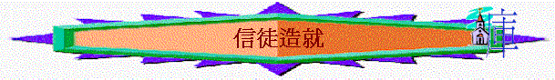

[ Home ] [ Up ] [ 長大成人課程 ] [ 初信造就 ] [ 信徒造就 ] [ 靈修生活 ] [ 基督生平 ] [ 栽培員訓練 ]
目的
用主日學教授形式(可以互相分享)， 將進深真理教導信徒，內分教師版與學生版．
內容
[ 1信徒生活(一) ] [ 2信徒生活 (二) ] [ 3認識真神（一）--三位一體 ] [ 4認識真神（二）--認識天父及聖靈 ] [ 5防備異端 ] [ 6奉獻 ] [ 7受浸 ] [ 8擘餅記念主 ] [ 9認識神的教會 ] [ 10教會生活 ] [ 11事奉神 ]
Word 版
hit counter